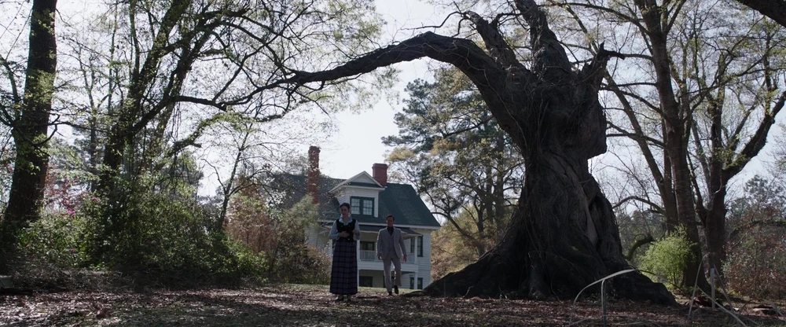

Horror
Written , a 4 minute read
Today is the end of my horror themed week, first in my life and I hope not last one. This motivates me to revisit my history with horror - a genre that I felt wasn't for me. A genre I regret not giving a fair chance before.
Anxious teen stumbles on some
The three movies that I watched years ago, still as a teen, were: The Conjuring, Event Horizon and I think either Sinister or Insidious I don't quite remember well. The last one I watched once at sanatorium for asthmatics and was pretty scered while trying to keep it together from peer preasure.
I love Conjuring. Some of my excitement to watch this movie may come from the director James Wan that directed also one of my favourite Fast and Furious movie: Fast & Furious 7. The movie don't have much of a body horror and uses eerie atmosphere to create tension. With beautiful shots it should be a great gateway drug to the genre - however it didn't work for me due to movies like the Nun that paints the landscapes of horrors abysmal.
Event Horizon somehow was recorded on my TV. So I watched it, main motivation has been probably Laurence Fishburne that I loved in the Matrix. I didn't watched it for last couple of years so my memory of it is a bit fuzzy. I remember it as a goofy space story that has some gore in it. It checks all the staples of the genre as I used to see it: wacky science (pierces a pen through a sheet of paper to show how space travel works) mixed with absurd world building to show you source of evil (if you go outside of our universe you go to hell which makes ship possessed). I had to close my eyes quite a few times but I kind of loved it. Fighting with a space ship from hell is just cool.
Jordan Peele, you almost got me
I don't remember how I encountered his movies, for sure I didn't go to the cinema for Get Out and Us. I suspect that my friend that is responsible for my enter to the horror genre in the current year did the same about 5-6 years ago with Get Out. Get Out, Us and Nope felt electric, packed with themes and meanings that really challenged not only my media literacy but worldview. His movies are probably one of the major reasons for my love for deeper media analysis (with Matrix, Community, Good Place).
Nope was my first horror movie on the big screen. I went with two friends at the late evening screening. I think that for other movie this would be a wrong choice but Nope's cosmic horror and lack of jump scares or body horror make it approachable for my low tolerance for fear and tension. It should be the moment that I would see more from the horror genre but I needed a little bit more time.
Overall, I think major contribution from Jordan Peele and Mike Flanagan is making horrors look so attractive. Peele movies are just an eye candy, especially Nope.
The Fall of the House of Usher makes me enter my horror era
The Fall of the House of Usher impressed me so much. Murder mystery mixed with some quick justice made my so hooked that I didn't believe was possible. Not only addictive in story but also in visuals. I noticed beauty in death, a concept that I always loved on philosophical level and now in the creativity of the death scenes. Is this a red flag? For most of my life I would probably see it as something weird.
Next, Totally Killer, a fun slasher that convinced me in join efforts of my friend, Kiernan Shipka and movie's trailer. Shows that slashers offer sincere cringe of wacky killers, having some fun with ridiculousness of it all.
Finally, three movies from this week that expanded my curiosity to the new level: Alien (1979), Alien: Romulus (this one not so much to be honest) and Scream (1996). Horror can be a masterpiece of cinematography, horror can provide you some philosophy, horror can be just a fun joyride.
I guess, I love horror now
Thank you Challangers for showing me how much is hidden from me by sticking to the action cinema, thanks all of the movies listed above for slowly destroying the wall of fear that prevented me from watching you. Thanks to my friend, that slowly convert me to the another horror beliver (for now light version).